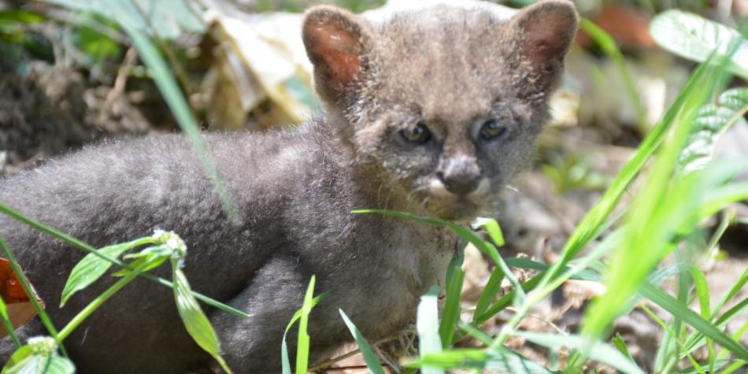

Una enorme sorpresa se llevó un campesino de la vereda Cuminá, en el municipio de Alvarado, Tolima, cuando descubrió que el animal que mantuvo durante días en su casa no era un gato —como siempre creyó—, sino un puma.
Unos 15 días atrás, cuando viajaba en moto a su casa de la vereda Cuminá, el campesino Elber Guzmán vio a un animal en la carretera y lo primero que pensó fue recogerlo para auxiliarlo y darle comida.
"Yo lo recogí en la vía, era igualito a un gato, y me dije: pobre animalito, debe estar perdido en este sitio tan solitario, mejor lo llevo a mi casa", afirmó Elber Guzmán y agregó que en esa zona abundan los animales abandonados.
Su familia lo recibió con agrado, por lo que al animal no le faltaba la leche en la mañana ni en la tarde, pero con el paso de los días a Elber le llamaron la atención ciertos comportamientos que lo pusieron a dudar.
"Me puse a verlo con detenimiento y me dio desconfianza pues tenía la cola larga y las orejas redondas. Además, su comportamiento, así como aspectos de la comida, no se asemejaban al de los gatos", dijo el campesino.
En su celular buscó información de los felinos y encontró una noticia con fotos del rescate de un puma yaguarundí en el aeropuerto Perales de Ibagué. Comparó las fotos con el animal que tenia en su casa "y eran igualitos, idénticos", por lo que decidió buscar ayuda en la Corporación Autónoma Regional del Tolima (Cortolima), la cual envió un veterinario a su finca donde se pudo constatar que, evidentemente, no era un gato sino un felino o puma yaguarundí el animal que tenía en su casa.
"Es un puma yaguarundí", aseguró Diego Castro, veterinario de Cortolima.
Rodrigo Herrera, subdirector de Calidad Ambiental de Cortolima, afirmó que se trata de una cachorra de dos meses de nacida, sin heridas, pero con desnutrición debido a que fue alimentado varios días con comida de sal y leche, mientras los campesinos dieron aviso para su rescate.
"En edad juvenil, los yaguarundí suelen aventurarse frecuentemente a sitios alejados, por lo cual posiblemente la mamá debe estar en un lugar cercano", señaló Rodrigo Herrera y agregó que el animal rescatado recibe tratamiento en el Centro de Atención y Valoración de Fauna Silvestre de Ibagué, para regresarlo a su hábitat.
En el centro de fauna valoran su estado de salud y biológico con los exámenes médicos, pero también es alimentado hasta que llegue a una edad en la que pueda cazar y defenderse por sí sola para establecer si puede ser liberada.
El campesino Guzmán señaló que, afortunadamente, su acción sirvió para ayudar al animal y más pausado afirmó que "siempre creí que se trataba de un gato, jamás pensé que fuera un animal silvestre".
Dijo que "los animales deben vivir en su hábitat y no en las casas".
El yaguarundí, mucho más grande que un gato, habita en las zonas boscosas y en su edad adulta alcanza a medir 83 centímetros de largo y a tener un peso de 6,5 kilogramos. Se alimenta de mamíferos, aves, reptiles, anfibios y peces.
FABIO ARENAS
Para EL TIEMPO
IBAGUÉ